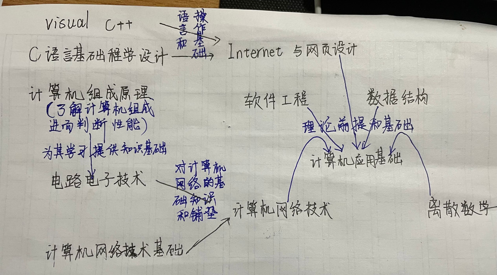

计算机专业是一门具有无限发展前景的专业，在有天赋和探索精神的同时还需要付出足够多的努力与汗水。计算机专业是建立在计算机这个高新设备的基础上的专业学科， 计算机（computer）俗称电脑，是现代一种用于高速计算的电子计算机器，可以进行数值计算，又可以进行逻辑计算，还具有存储记忆功能。是能够按照程序运行，自动、高速处理海量数据的现代化智能电子设备。 计算机专业方面的研究不仅针对于高科技产品，还针对于人们的日常生活，随着时代的发展，人们的生活与计算机间的关系也越来越密切，不论以后是处在哪个行业，计算机 必然会是一门必须掌握的基础知识，而计算机专业将会是在计算机常识和基础上进一步的深入学习研究，计算机专业是一门关系国家发展的专业，计算机行业的的发展可以说是社会的进步和文化的进步。计算机专业包括的 课程有：C语言基础程序设计、Internet及网页设计visual c++、电路电子技术、计算机网络技术、计算机应用基础、计算机组成原理、软件工程、数据结构、离散数学和计算机网络基础等等。 同时，计算机是一个每时每刻都在进步的工具，因此计算机专业的研究也在不停的进步、发展，学习计算机的学子们需要秉承创新和钻研精神，能够将计算机专业知识与社会生活联系起来，引领时代的进步和发展。
我作为一名交大学子，周围的同学都是各个省份的优秀人才，交大为我们创造了一个良好、自律的学习氛围，老师们都是在各自领域的翘楚，对于教学也更有自己独到深刻的理解，同学们也互相促进互相监督，在这样的一个具有浓郁学习氛围的校园里学习，我们每个人都希望自己更加的优秀。 我们交大所传承的西迁精神，更是激励每一个学子努力学习，报答社会和国家的精神动力，每个交大人的有自己的一番追求。我自幼独立，对于学习我有我的方法，也有特别的热爱，我善于思考，勤于动手，乐于请教，学习时能够专心致志做到两耳不闻窗外事，一心只读圣贤书的境界，同时我也性格开朗，喜欢交流。 我希望能够在大学里培养更加广泛的兴趣爱好，扩大自己的交际圈，掌握更多的专业技能，同时能够学习自己感兴趣的微电子专业。思想上我希望能够更进一步的去学习马克思主义理论和思想，早日递交入党申请书，成为一名光荣的中国共产党党员。对于眼界，从一个普普通通的区中学毕业，我自认为自己的眼界 是非常有限的，我希望在大学里面能够多多的接触外面的世界，多多的增长见识，见识广了我相信自己的理想也能够更加的不拘泥于眼前。在大学里面，积极进取，不为了学习而学习。发展自身是我接受大学教育的一个主要目的，我们接受教育不是为了眼高于人或是自觉高人一等，而是要将自己的毕生所学用在伟大的社会主义现代化建设上， 我愿意为了共产主义付出自己的青春，从大一到大四，我要争取做到对学业一丝不苟，对人物精益求精，对老师尊敬礼貌，对同学互帮互助。学好英语是我上大学的必备技能，如今的国际化潮流越来越明显，要想发展成为一名国际性人才，掌握好一门外国语是非常有必要的，而英语作为如今的国际通用语，当然是首选。 除此之外，还要抽时间去掌握第三门语言，不说精通，但至少要略懂一二。掌握比较通透的计算机知识也是必要的，当今时代是信息时代，是计算机引领发展的时代，计算机的重要性不言而喻，掌握计算机的基础知识，不论是对我以后学业上还是工作上都会有举足轻重的地位，同时计算机也越来越贴近生活，计算机可以便利生活，是名副其实 的改变了一个时代的伟大发明。大学里，我最需要做到的是不忘初心，牢记使命，不被盈盈小利诱惑，发展自身才是重中之重。